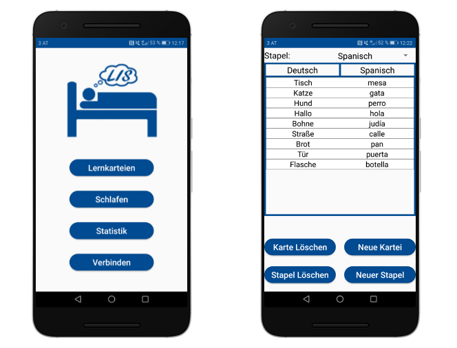

LIS

Description
LIS is a german shortcut for "Lernen im Schlaf" (En. "Lerning during the sleep"). It is a bigger project than the other ones. It contains of the native Android application and a wearable device. The idea is to measure bio-signals like the heartrate, oxygen saturation and movements during the sleep, track them with the app and process them to identify the different sleep stages. During specific sleep stages, the app plays vocabulary that was learned previously that day. The idea came to us while reading a study that showed, that this has a positive effect on the results. The app itself receives the values via bluetooth, writes them into files to persist the data, and processes them to detect the sleep stage. During specific sleep stages, the chosen vocabulary gets played. The app does not have to be active during this process.Motivation
LIS was the diploma project in school, on which I have worked with two friends. We have worked on this for about 7 months and finished it with a more than 100 pages documentation. We seperated the project in several parts, whereby my major part was to develop the application. This was how I got into app development, and how I found the passion for it. This was the biggest project I have ever worked on, and all of us loved the process.What I learned
- The very basics of the Andorid SDK
- The programming language Kotlin
- Very deep understanding of Java
- How to implement SQLite databases
- How to use Services and BroadcastReceivers
- How to use the TextToSpeech class
- How to implement Bluetooth
Besides from coding
- How to work in a team (And that it can be difficult sometimes)
- How to manage a project
- How to document a project
- Most important: I found out about one of my passions